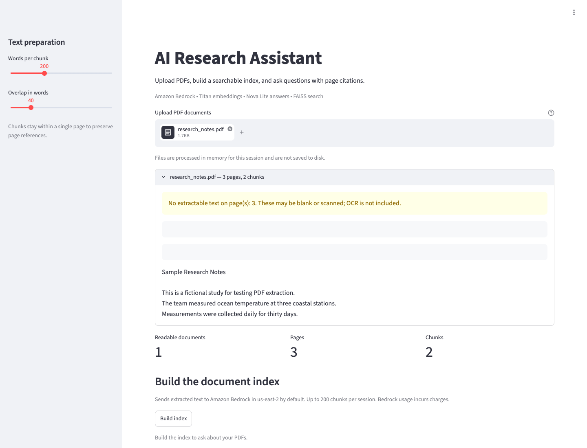
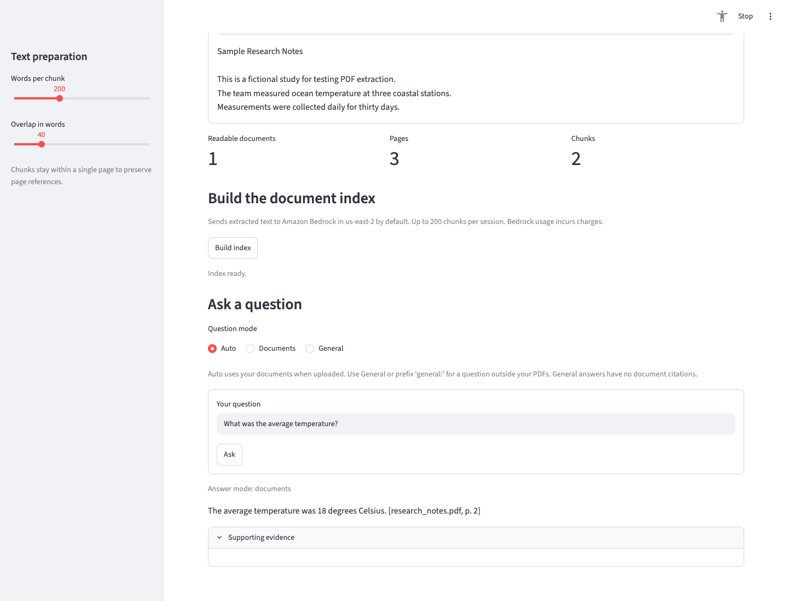
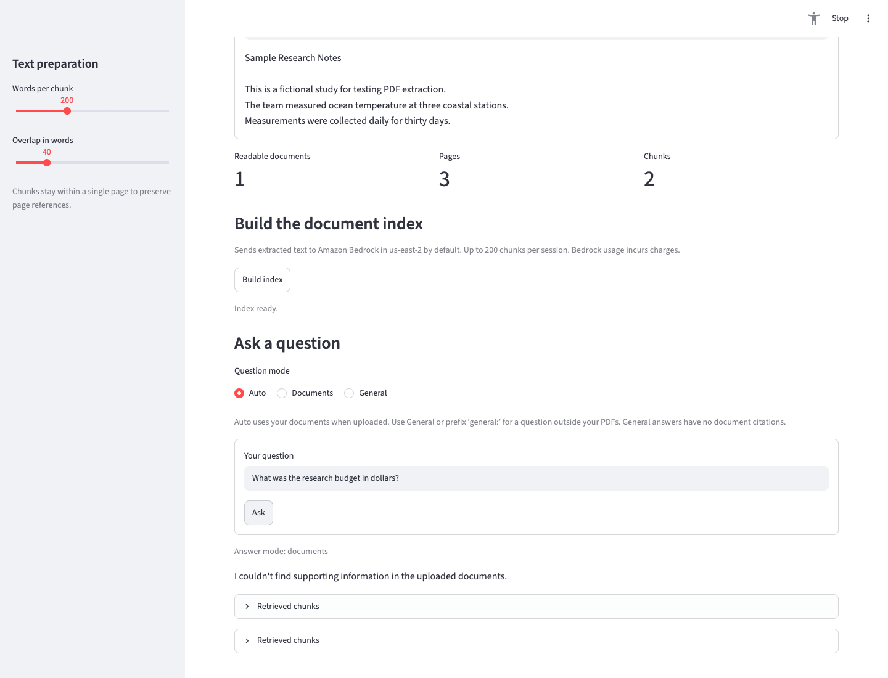
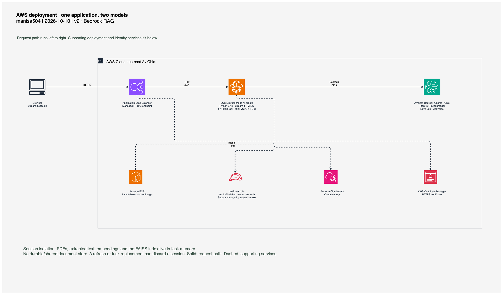
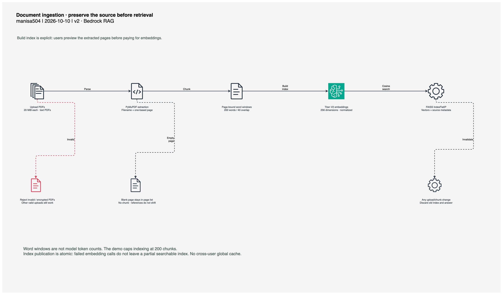
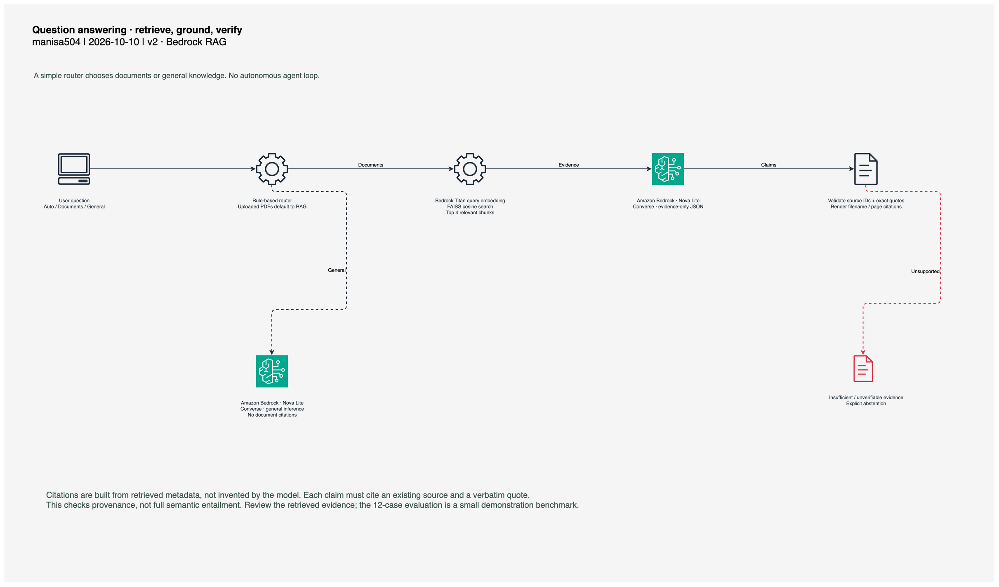

Start with the source.
Upload research_notes.pdf. Expect 1 document, 3 pages, and 2 chunks. Page 3 stays in the page list even though it is blank, so references never shift.


PYMUPDF → PAGE OBJECTS → OVERLAPPING WORD WINDOWS
ENGINEERING CASE STUDY / 01
From a PDF on your desk to an answer you can check. A working research assistant built with Amazon Bedrock, FAISS, and a clear trail back to the source.
BUILT BY @manisa504PYTHON 3.12 · AWS OHIO

“The average temperature was 18 degrees Celsius.”
research_notes.pdf · page 2THE ENGINEERING PROBLEM
PDF question answering starts well before the language model. Extraction has to preserve page references. Retrieval has to bring back relevant evidence. The final answer needs a traceable source.
This project implements that whole path in a handful of Python modules. You can inspect every step, run it locally, and compare the model’s answer with the exact text that supported it.
Read the retrieval and citation code ↗01 / THE WALKTHROUGH
Use the fictional research notes to reproduce the demo. Three pages, two text chunks, and a deliberately unanswered question.
Select General to ask a question outside the PDFs. The simple router sends it directly to Bedrock, without document citations.
Upload research_notes.pdf. Expect 1 document, 3 pages, and 2 chunks. Page 3 stays in the page list even though it is blank, so references never shift.

Click Build index. Titan V2 creates normalized 256-dimensional embeddings. FAISS keeps those vectors next to their source metadata. Then ask: “What was the average temperature?”
Nova Lite returns claims and evidence. The application checks source IDs and exact quotes, then builds [research_notes.pdf, p. 2] from metadata. Open Supporting evidence and compare the quote.
Ask for the research budget. The notes never mention one. The assistant explicitly reports insufficient support instead of inventing a number. Unverifiable model output also takes this path.

02 / UNDER THE HOOD

One ARM64 task in Ohio. A managed HTTPS endpoint. A task role scoped to two Bedrock models.
Editable drawing ↓Architecture notes ↗
Explicit indexing keeps extraction inspectable. Changing uploads invalidates stale evidence.
Editable drawing ↓Pipeline notes ↗
Retrieve evidence, generate claims, verify provenance. General questions take one direct inference path.
Editable drawing ↓Answer-flow notes ↗amazon.titan-embed-text-v2:0InvokeModel · normalized 256-dimensional vectorsamazon.nova-lite-v1:0Converse · document evidence or general inferenceus-east-2 · FAISS IndexFlatIPRegional model calls · session-local cosine searchEvery chunk belongs to a single page. Citation mapping stays simple; cross-page context can be lost.
The local credential chain and a scoped ECS task role supply temporary credentials. Docker carries no keys.
Files and FAISS live in isolated session memory. A task replacement can discard them; this is a single-task demo.
03 / SHOW THE RECEIPTS
Offline tests cover the mechanics. Real Bedrock cases check retrieval, source validity, expected answers, and missing information. A browser smoke test exercises the deployed application.
deployed browser checks
Recorded checks ↗Recorded October 10, 2026. A small demonstration corpus with two text chunks; these results do not establish production accuracy. Answer checks use expected phrases, not a semantic judge. Citation validation checks provenance, not full logical entailment.
04 / THE PROJECT IN 20 SECONDS
A short BRAG product film using real application captures. Silent by design, with the complete story on screen.
Download the project film ↓05 / SCOPE & NEXT STEPS
Shipped: PDF ingestion, Bedrock embeddings, FAISS search, grounded answers, page citations, simple routing, automated tests, evaluation CSV, and AWS deployment.
Next: OCR, broader evaluation, authentication and usage quotas, durable document storage, and conversation history. These features are not implemented.
The public demo processes up to 20 MiB per PDF and indexes up to 200 chunks per session. Bedrock calls incur charges. Use the provided fictional sample to explore.
EXPLORE THE IMPLEMENTATION